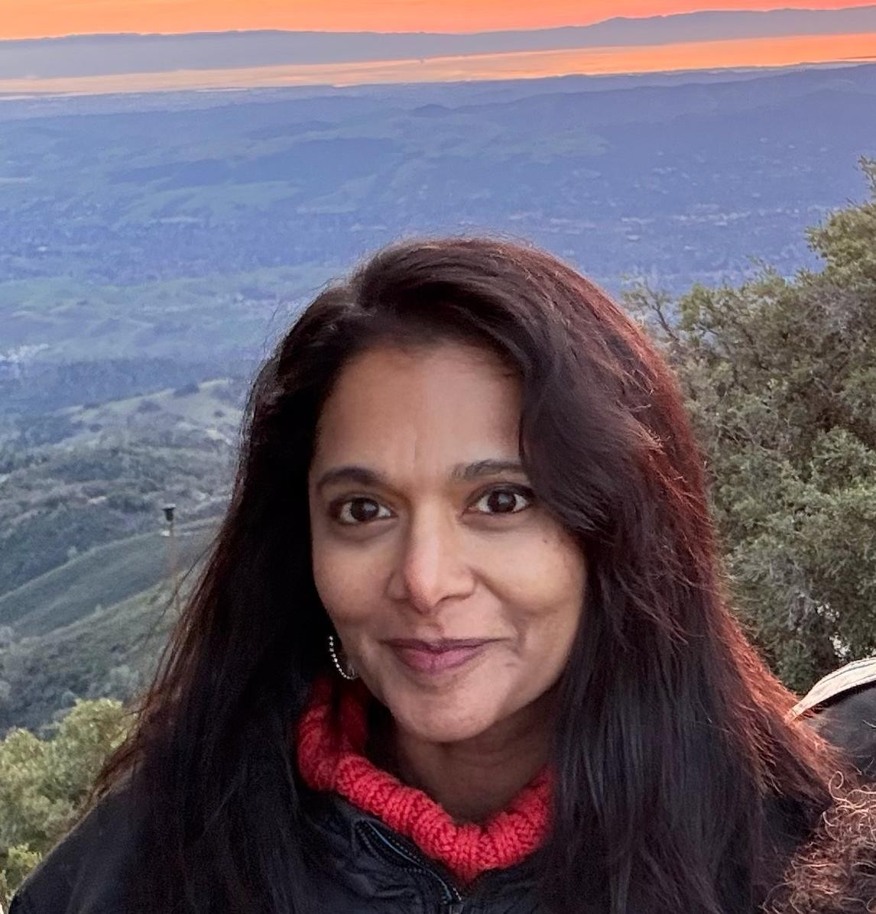

Our People
Humans of Aarti
“People think, boys are valuable but girls are not. We want to change that.”
Discrimination against girl children is deep rooted and needs to be addressed at a different level and on many fronts to change the societal mindset. Aarti’s team is an extended family of volunteers, donors, board members, community members and even Aarti girls themselves all sharing this same objective.
India
India Board of Directors

Ms. Sandhya Puchalapalli
Sandhya is a seasoned operations leader with more than 15 years of experience driving process excellence across multinational teams. She founded Aarti in 1992 after rescuing a 2-year-old girl abandoned on a Kadapa street.

Ms. Durga Kumari
Durga oversees community initiatives and has a passion for connecting people to meaningful causes.

Mr. Jayesh Ranjan
Jayesh Ranjan is an IAS officer of the Telangana cadre. He is currently the Special Chief Secretary for the Information Technology, Electronics & Communications (ITE&C) and Industries & Commerce Departments of the Government of Telangana.

Mr. R. Shivananda Reddy
Mr. R.V. Sivananda Reddy has more than 40 years of experience as a Management Professional.

Dr. T. Vindhya
Dr. Vindhya has more than 35 years of experience as a gynaecologist. She is also an active member of the Hyderabad and Telangana chapters of FOGSI.

Ms. Shyamala Rajaram
Shyamala, a graduate of IIT Madras, has over a decade of experience in designing and developing solutions using Open Source platforms. She is a Co-Founder and Director of UniMity Solutions, and is based in Chennai.

Ms. Swati Puchalapalli
Swati is a sustainable architect and is specialist in design energy efficient buildings.

Mr. G. Vijayabhaskar Reddy
Mr. Vijayabhaskar Reddy is a professional advocate and the founder of Aarti.

Dr. P. Bali Reddy
Dr. Bali Reddy is a well-known physician in Kadapa city with over 45 years of experience. He is a highly respected member of the medical community and has provided tremendous support to Aarti Home since its inception.

Mr. Umamaheswar Reddy
Mr. Uma Maheswar Reddy has more than 27 years of experience as a Chartered Accountant and is Joint Treasurer of Aarti.
United States
USA Board of Directors
Ms. Preeti Hari Nandanar
Preeti is the inaugural CEO of Aarti for Girls Inc., a US-based organization dedicated to supporting Aarti India. With a lifelong commitment to girls’ empowerment through education, her passion was sparked by her grandmother’s efforts to promote literacy among underserved girls and women. Preeti brings over 15 years of experience in Financial Services, having worked in Investment Banking at JP Morgan and Citi. An engineering graduate from IIT Chennai and an MBA from IIM Calcutta, she resides in New York City.

Ms. Deepthi Sigireddi
Deepthi is a senior technologist currently working at a Silicon Valley startup. Growing up as a girl in India, she saw the disparities in educational opportunities for girls and women born into economically disadvantaged families. She holds a Bachelor’s in Engineering from IIT Madras and a Master’s in Engineering from the University of Texas, Austin.

Ms. Bonnie Sue Zare
Bonnie is a Professor of Sociology and the Director of Women’s and Gender Studies at Virginia Tech. She has made yearly stays in India since 2002, focusing on Telangana and Andhra Pradesh. Her research centers on discourses of identity, feminism, and activism in contemporary India. Dr. Zare has brought seven groups of university students to Aarti to learn about on-the-ground change.

Ms. Sridevi Joshi
Sridevi originates from Kadapa, Andhra Pradesh and has been associated with Aarti Home since it was established in 1992. Professionally, she is an Engineer and a proud alumna of JNTU Anantapur and BITS, Pilani. She holds the position of Senior Software Architect at Intel Corporation, residing in Allentown, Pennsylvania.

Ms. Subhashini Boyareddigari
Subhashini is a dedicated person of service who moved to the US in 1976. She is an experienced fundraiser and leader, having served for 13 years as a board member of Hope Inc., an organization for battered women and children. Her mother tongue is Telugu, and she has served as convener for several Telugu Association of North America and American Telugu Association conventions.

Mr. Obul Kambham
Obul Kambham is a seasoned technologist and entrepreneur with 40 years of experience who has contributed to major tech companies like Apple, Symantec, Cisco, and VMWare, as well as startups such as mPerpetuo and Automation Anywhere. He has successfully initiated three companies, leading to successful exits, and currently mentors multiple startups.

Roopa Reddy
Roopa is a philanthropist and advocate committed to improving the lives of children and underserved communities across the United States and India. As the Founder and CEO of Providing Possibilities Foundation (PPF), she has been associated with Aarti for Girls since 1992, with PPF partnering closely since 2009 to support fundraising, program development, and mental health initiatives. With a background in biochemistry and molecular biology, Roopa is also a litigation attorney in California.

Shalini Puchalapalli
Shalini is a transformational business leader with deep expertise across Sales, Finance, Supply Chain, and Human Resources. She was honoured as a Young Global Leader (YGL) by the World Economic Forum in 2015 and recognized among Economic Times and Spencer Stuart’s 40 Under 40 Influential Leaders (2014). She has been a pillar of strength for Aarti For Girls for over 30 years.
Day to Day
Meet Our Awesome Team
Rajeev Vartak
Programme Director at Aarti For Girls.
Indumathi Ravishankar
Social Work Lead at Aarti For Girls.
Prabhu Podipireddy
Headed the Mana Bidda Project, Aarti’s flagship gender-sensitisation initiative funded by the European Commission.
Aruna Reddy
Child Care Coordinator at Aarti For Girls.
Bhagyamma Mure
Counsellor at Aarti For Girls.
Amrita Kumar
Education Coordinator at Aarti For Girls.
Sunilkanth Rachamadugu
IT & Admin at Aarti For Girls.
Kabir Ahmed
Field Officer at Aarti For Girls.
Sree Vani
Community Outreach at Aarti For Girls.
Sree Latha
Programme Support at Aarti For Girls.
Varuna Law Associates
Reputed law-firm specialised in legal services, working closely for the social impact of empowering women in rural areas.
Terra Viridis
Specialists in environmental sustainability who help design and build facilities conforming to NET ZERO.
Advisory
Pillars of Aarti
Distinguished individuals whose guidance has shaped the direction of Aarti For Girls.
Mr. K. Jayabharatha Reddy
A distinguished IAS officer with an extensive career in public administration and social development across Andhra Pradesh.
Mr. A. N. Tiwari
A senior IAS officer whose counsel on administrative matters has been invaluable to Aarti For Girls.
Mr. Kanchi V. Rama Moorthy
Has provided steadfast guidance to Aarti For Girls, drawing on experience in community leadership and social development.
Mr. T. Mallikarjuna Reddy
His expertise in regional governance and community welfare has informed Aarti’s programme design.
Mr. G. R. Reddy
A senior Indian Revenue Service officer who has supported Aarti For Girls with expert financial and regulatory guidance.
Dr. Puchalapalli Sreenivasulu Reddy
A distinguished physician and academic whose medical expertise has supported Aarti’s healthcare and wellbeing initiatives.
Be Part of the Aarti Family
“Our volunteers are always a part of the Aarti family.”
Join the hundreds of people from around the world who have given their time and skills to Aarti’s mission.
Become a Volunteer